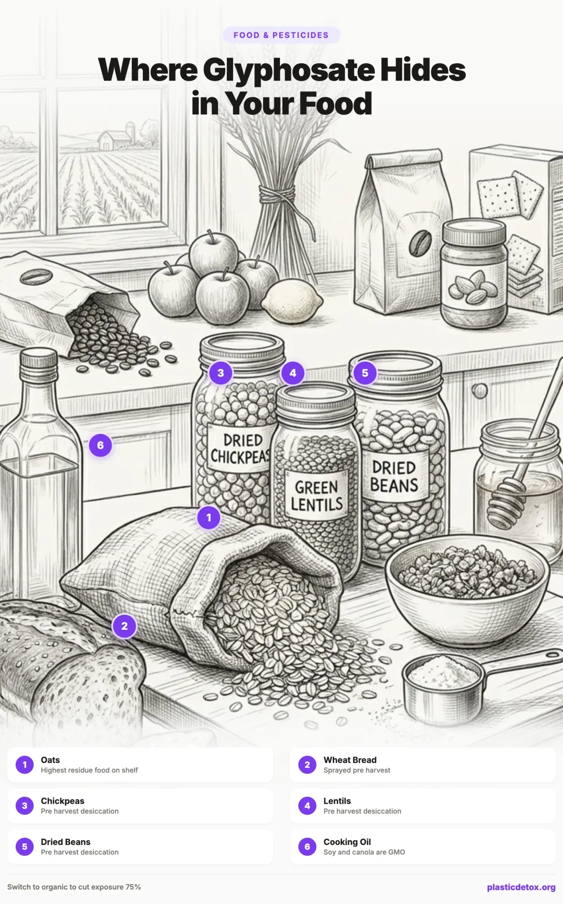
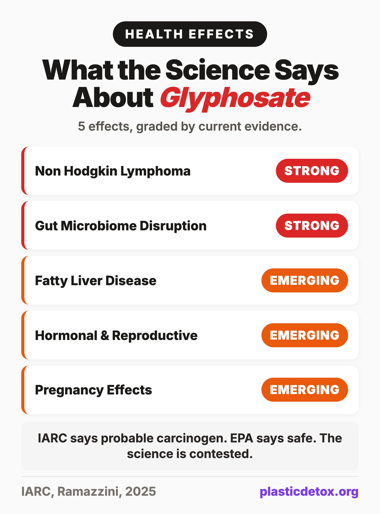
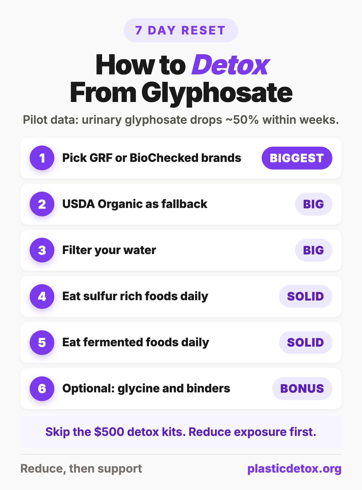

Glyphosate Detox: What It Is, Where It Hides in Your Food, and How to Reduce Exposure (2026)
The 30 Second Summary
- Glyphosate is in roughly 80% of Americans tested. Most exposure comes from "preharvest desiccation," where farmers spray Roundup on wheat, oats, and legumes 7 to 14 days before harvest to dry the crop.
- Six foods drive most of the exposure: oats, wheat bread and pasta, chickpeas, lentils, dried beans, and cooking oils.
- Pilot data shows urinary glyphosate drops about 50% within weeks of switching to organic. You do not need to overhaul your whole pantry, just the high residue staples.
- Best oat pick: One Degree Organics Sprouted Rolled Oats, BioChecked Non Glyphosate Certified.
- Best legume pick: Jovial Foods organic chickpeas in glass jars, Glyphosate Residue Free certified.
- Filter your water and skip the $500 detox kits. A reverse osmosis system like the Bluevua RO100ROPOT removes glyphosate. Sulfur rich foods (broccoli, garlic) and fermented foods support natural detox.
If you eat conventional oatmeal, whole wheat bread, hummus, lentil soup, or feed your child store brand baby cereal, you almost certainly have glyphosate in your urine. Independent testing by the Environmental Working Group has found measurable glyphosate residues in roughly 80 percent of the Americans tested, including most children. The chemical does not stay long in any single person, but the typical American diet keeps it constantly topped up.
Glyphosate is the active ingredient in Roundup and the most heavily used agricultural chemical in history. It is also the subject of one of the largest pesticide related mass tort settlements in U.S. history. Bayer has committed more than $16 billion to settle and resolve non Hodgkin lymphoma claims from Roundup exposure, with additional billions in reserves for pending cases. The science is still being argued, but the precautionary case for reducing exposure is strong, and the practical steps are surprisingly cheap and simple.
This guide walks through what glyphosate actually is, where it shows up in your food (the answer is not what most people expect), what the latest 2025 and 2026 research says about the health effects, and exactly how to reduce your exposure in seven days without overhauling your entire pantry.

1. What Is Glyphosate, Really?
Glyphosate is a synthetic chemical with the formula N (phosphonomethyl) glycine. Chemically it is a small molecule that mimics an amino acid, which is the trick that lets it sneak into plant biology and shut it down. It was first synthesized in 1950 by a Swiss chemist who patented it as a metal chelator for industrial use. Two decades later, scientists at Monsanto rediscovered it, realized it killed plants effectively, and brought it to market in 1974 under the brand name Roundup.
Glyphosate is what regulators call a non selective systemic herbicide. Non selective means it kills almost any plant it touches. Systemic means it does not just burn the leaves on contact. It travels through the plant's vascular system down into the roots and out into every leaf, stem, and seed. That second property is what makes glyphosate so different from older surface contact pesticides, and it is also what makes washing fruit ineffective at removing it.
How Glyphosate Kills Plants
Glyphosate works by blocking an enzyme called EPSP synthase, which sits at the heart of something called the shikimate pathway. The shikimate pathway is how plants build three essential amino acids (phenylalanine, tyrosine, and tryptophan), which they need to grow. Block the pathway and the plant runs out of those amino acids, stops making proteins, and dies within one to three weeks.
Humans do not have the shikimate pathway, which is the argument the industry has used for decades to call glyphosate safe. The problem is that many of the bacteria living in the human gut do have the shikimate pathway. Beneficial species like Lactobacillus and Bifidobacterium use it, while several pathogenic species (including some strains of Salmonella and Clostridium) are naturally resistant. So the chemical does not directly poison your cells, but it can selectively pressure your microbiome in a direction that favors the wrong tenants.
From Niche Herbicide to Most Sprayed Chemical Ever
For its first two decades on the market, glyphosate was a moderately popular farm chemical. Volumes exploded in 1996 when Monsanto introduced the first genetically engineered Roundup Ready soybeans, followed by corn, canola, cotton, sugar beets, and alfalfa. These crops are engineered to survive direct glyphosate spraying, which lets farmers blanket entire fields with herbicide and kill every plant except the one they planted.
Global glyphosate use has grown roughly 15 fold since the mid 1990s. Industry analysts project worldwide use to reach approximately 920,000 tonnes in 2025. To put that in perspective, that is about a quarter pound of glyphosate sprayed each year for every person on Earth. About 280 million pounds of it goes onto American farmland.
2. The Two Ways Glyphosate Ends Up in Your Food
Most people assume glyphosate is in food because it was sprayed on a weed nearby. The reality is more direct. Glyphosate ends up in your food because it was sprayed on the food itself, and there are two distinct routes.
Route 1: Roundup Ready GMO Crops
The first and most famous route is the Roundup Ready system. Roundup Ready crops are genetically engineered to express a bacterial version of the EPSP synthase enzyme that glyphosate cannot bind to. The plant grows normally even when sprayed with the herbicide. Every other plant in the field dies. Roundup Ready varieties dominate American agriculture for the following crops.
- Soybeans: roughly 94 percent of American soy is Roundup Ready
- Corn: roughly 92 percent of American corn is Roundup Ready
- Canola: over 95 percent of Canadian canola is Roundup Ready
- Sugar beets: over 98 percent of American sugar beets are Roundup Ready
- Cotton: roughly 90 percent of American cotton is Roundup Ready
- Alfalfa: a growing share of American alfalfa hay (fed to dairy cattle) is Roundup Ready
That last one matters more than people realize. Glyphosate sprayed on alfalfa fields ends up in the dairy cows that eat it, which is one reason conventional milk and cheese sometimes test positive for residues.
Route 2: Pre Harvest Desiccation (the Bigger Problem)
The second route is less famous but actually drives the highest residue levels in finished food. It is called pre harvest desiccation, and it is used on conventional, non GMO crops.
Many cool climate crops, particularly oats, wheat, barley, lentils, dried peas, and chickpeas, do not all ripen at the same time. To get the field ready for combining on a single day, farmers spray the crop with glyphosate seven to ten days before harvest. The herbicide kills the entire plant, dries it down uniformly, and lets the combine roll through cleanly. The catch is that the grain is still alive when the spray hits, so it absorbs the chemical directly into the seed. By the time it reaches your bowl, the residue is locked into the food.
This practice is why the highest residue foods in EWG testing are not GMO corn or soy, but conventional oats, conventional wheat, and conventional legumes. Non GMO labeling does nothing to address this. A bag of conventional rolled oats can be 100 percent non GMO and still carry significant glyphosate residue from pre harvest spraying.
Why Washing Does Not Help
If glyphosate were a surface pesticide, you could rinse most of it off. Many older insecticides work that way. Glyphosate does not. Because it is systemic, it moves through the plant's vascular system into every cell. By the time the grain or fruit reaches your kitchen, the residue is inside the food. Soaking lentils helps with phytic acid and digestibility, but it does not meaningfully reduce glyphosate. The same is true for rinsing a strawberry or peeling an apple.
The Non GMO Project Verified seal certifies that the crop is not genetically engineered. It says nothing about pesticide use, and a bag of non GMO oats can be sprayed with glyphosate seven days before harvest and still carry the seal.
USDA Organic is much better, but it is also imperfect. Organic farmers cannot intentionally apply glyphosate, use Roundup Ready seeds, or use it for desiccation. That is real and meaningful. But organic standards still allow residues up to 5 percent of the EPA tolerance for that crop, which on wheat works out to roughly 75 ppb, and the certification is process based: it audits farming practices but does not require lab testing of the finished food.
The strongest protection is a finished product testing certification. Two seals do this: the Glyphosate Residue Free certification from The Detox Project (detection limit 0.01 ppm, ~10 ppb) and the Non Glyphosate Certified seal from BioChecked (independent lab testing of finished product). Both require the food itself to test below detection, not just the field it grew in.
Bookmark these two databases. Before buying any product that claims to be glyphosate free, search the brand and SKU on detoxproject.org and biochecked.com. Certifications apply to specific products, not whole brand catalogs, and lists update as brands are added or expire.
3. The Foods With the Highest Glyphosate Levels
Independent testing by the Environmental Working Group, the Health Research Institute, the Detox Project, and FDA monitoring programs paints a fairly consistent picture of which foods carry the most residue. Here is the practical version of that picture, sorted by tier.
Tier 1: Highest Risk (Swap These First)
| Food | Why It Is High | Typical Residue Range (ppb) |
|---|---|---|
| Conventional oats | Pre harvest desiccation is routine | |
| Conventional wheat products | Pre harvest desiccation, especially in spring wheat | |
| Conventional chickpeas | Pre harvest desiccation in pulse crops | |
| Conventional lentils | Pre harvest desiccation | |
| Dried beans (conventional) | Pre harvest desiccation | |
| Soy products (conventional) | Roundup Ready, sprayed in season |
Tier 2: Moderate Risk
| Food | Why It Is Moderate | Typical Residue Range (ppb) |
|---|---|---|
| Conventional corn products | Roundup Ready, but kernel residues are diluted in finished food | |
| Almonds (especially California) | Sprayed under trees as a weed killer; trace uptake. Limited public testing data. | |
| Sunflower products | Pre harvest desiccation in some regions | |
| Honey | Bees forage on Roundup Ready crops and weeds nearby | |
| Wine and beer | Vineyard floor sprays and conventional barley/hops |
Tier 3: Lower but Detectable
| Food | Why It Shows Up | Typical Residue Range (ppb) |
|---|---|---|
| Apples | Orchard floor weed control; small uptake | |
| Grapes and raisins | Vineyard floor sprays | |
| Conventional rice | Some pre harvest use; varies by region | |
| Conventional dairy and meat (grain fed) | Animals eat sprayed feed; residues pass through |
A Note on Baby Cereals and Infant Exposure
One of the most consistent and concerning findings in independent testing is glyphosate in baby foods made from oats and wheat. EWG has tested major store brand and natural brand infant cereals across multiple rounds since 2018, and the majority of conventional samples have come back positive. Some natural and organic brands have tested clean, but a few have shown residues despite the labeling, which appears to be a cross contamination problem at the milling and processing stage rather than direct spraying.
Per body weight, infants and toddlers receive a much higher relative dose than adults from the same serving. A toddler eating an ounce of conventional oat cereal can consume more glyphosate per kilogram of body weight than an adult eating a full bowl. This is the part of the glyphosate story that most worries pediatric researchers, and the part where switching to certified organic delivers the highest payoff.
4. Beyond Food: Other Routes of Exposure
Food is the dominant route of glyphosate exposure for the typical American, but it is not the only route. Several non dietary pathways become significant for people who live near agricultural land, garden with conventional weed killers, or live in homes with treated lawns.
Drinking Water
Glyphosate is fairly water soluble and runs off agricultural fields into streams, rivers, and shallow groundwater. The EPA monitors public drinking water for glyphosate but at a maximum allowable level of 700 parts per billion, which is dramatically higher than the residue cutoffs used in food. Water utilities rarely report measurable glyphosate, but private well owners in farm regions often do. If you live in the Corn Belt, the upper Midwest, or near California's Central Valley, a quality water test is worth it. Reverse osmosis is the most reliable way to remove glyphosate from drinking water at home.
Residential Weed Killers
Roundup branded products, generic glyphosate concentrates, and dozens of "weed and grass killer" formulations sold at hardware stores and garden centers all contain glyphosate. Spraying it on driveways, patios, fence lines, and gravel paths sends the chemical into your soil, your shoes, and your home. Residential glyphosate exposure has been measured in family members of homeowners who applied it themselves, sometimes for weeks afterward.
Drift in Farming Communities
Aerial and ground spraying drift can travel hundreds of meters in light wind. People living within a half mile of conventional row crop fields have been documented to have higher urinary glyphosate levels than people in non agricultural areas, even when their diets are similar. This is particularly relevant for readers in rural California, the Midwest, the Pacific Northwest, and anywhere near sugar beet, soy, or wheat acreage.
House Dust and Indoor Tracking
Once glyphosate gets onto shoes, pet paws, or sports equipment, it tracks indoors and ends up in household dust. Studies sampling house dust in farm communities have consistently detected glyphosate, often at higher levels than in non farm households. Toddlers, who spend the most time on the floor and put their hands in their mouths most often, get a meaningful share of their total glyphosate exposure this way.
Treated Turf, Parks, and Playgrounds
Many municipal parks, school grounds, golf courses, and HOA managed common areas spray glyphosate to control weeds along sidewalks, fence lines, and gravel margins. Skin contact with treated turf is a minor exposure route compared to food, but for kids who play barefoot, it is not zero. Several California cities and school districts have banned glyphosate on public property in the last five years, and the trend is accelerating.
5. What the Science Says About Health Effects
The science on glyphosate is genuinely contested, and any honest summary has to grade the findings rather than treat them as a single block. The strongest evidence is for cancer and gut microbiome disruption. The 2025 wave of research has added meaningful evidence for liver, reproductive, and neurological effects, though these are still emerging rather than settled. Here is what the literature actually supports as of early 2026.

Cancer
The International Agency for Research on Cancer (IARC), the cancer research arm of the World Health Organization, classified glyphosate as Group 2A: probably carcinogenic to humans in 2015, citing strong evidence in animal studies and limited evidence in humans for non Hodgkin lymphoma. The 2025 Global Glyphosate Study from Italy's Ramazzini Institute, described by its authors as the most comprehensive independent rodent study to date on the chemical, found increased rates of leukemia and other tumors in animals exposed to doses considered safe under EU regulatory limits. Bayer (which acquired Monsanto in 2018) has committed more than $16 billion to settle non Hodgkin lymphoma claims from groundskeepers, farmers, and homeowners with documented Roundup exposure, with additional billions reserved for pending cases.
The EPA continues to classify glyphosate as not likely to be carcinogenic. The European Food Safety Authority took a similar position in its 2023 reapproval review. The disagreement is real, and it is mostly about which studies regulators choose to weigh more heavily. The pattern, however, is consistent: independent and international cancer agencies see a signal that national regulatory bodies in the United States and Europe have so far chosen not to act on.
Gut Microbiome Disruption
This is the area where the mechanistic story is cleanest. Lab and animal studies consistently show that glyphosate exposure shifts gut microbial populations, suppressing beneficial Lactobacillus and Bifidobacterium species while leaving (and in some cases favoring) pathogenic strains. Human in vitro studies on stool samples mirror the finding. The clinical question is whether typical dietary exposures are enough to matter, and that is still being studied. Given how central a balanced microbiome is to immune function, mood, and metabolic health, the precautionary case for reducing exposure is strong.
Liver Health
A 2025 review of more than 40 animal and human studies pulled together two decades of data linking chronic low level glyphosate exposure to metabolic dysfunction associated steatotic liver disease (MASLD), the condition formerly known as non alcoholic fatty liver disease. Markers of liver stress have been documented in adults at urinary glyphosate levels comparable to typical American population averages. The mechanism appears to involve mitochondrial disruption and oxidative stress in liver cells.
Endocrine and Reproductive Effects
A 2025 review in Reproductive Sciences synthesized several dozen studies linking glyphosate exposure to hormonal disruption, ovarian dysfunction, and an increased likelihood of conditions like polycystic ovary syndrome (PCOS) and endometriosis. The proposed mechanisms include estrogen receptor activation, aromatase enzyme interference, and oxidative stress on ovarian cells. The literature on male reproductive effects is smaller but points in the same direction (reduced sperm quality and altered testosterone signaling at chronic doses).
Pregnancy and Infant Development
Glyphosate has been detected in maternal blood, umbilical cord blood, and breast milk in multiple cohort studies. A widely cited but small Indiana University cohort (roughly 70 women) found that higher prenatal urinary glyphosate levels were associated with shorter pregnancy duration, an effect that persisted after controlling for diet and demographics. Animal studies show developmental effects at doses that translate to plausible human exposures. The human evidence is preliminary rather than settled, but the precautionary case for prioritizing exposure reduction during pregnancy is reasonable.
Neurological Concerns
The most striking 2025 finding came from a joint TGen and Arizona State University study, which reported that glyphosate crosses the blood brain barrier in mice and produces neuroinflammation and Alzheimer's like pathology even at low chronic doses. The finding is preliminary and species translation is uncertain, but it caught the attention of the field because the dose used was within the range of human dietary exposure. A larger independent replication is underway.
Metabolic Effects
Several 2025 epidemiological papers have found associations between higher urinary glyphosate (and AMPA, the main metabolite) and markers of glucose dysregulation, insulin resistance, and metabolic syndrome. The associations survive adjustment for body mass index and diet quality. This is observational data, so causation is not established, but it adds to the list of plausible mechanisms by which low level chronic exposure could have real consequences.
6. How to Tell If You Are Exposed
The most reliable way to find out whether you are carrying glyphosate is to test your urine. Glyphosate and its main metabolite AMPA are both excreted unchanged in urine within 24 to 48 hours of exposure, which means a urine sample reflects roughly the previous one to two days of intake.
Use a Mail In Lab That Runs Mass Spectrometry
The only methods sensitive enough to detect glyphosate at the levels that actually matter are LC MS/MS (liquid chromatography mass spectrometry) and similar mass spec techniques, which can resolve down to roughly 0.5 ppb. Strip style test kits sold on Amazon and elsewhere typically cannot detect below about 50 ppb, while typical population exposure shows up in the 1 to 5 ppb range. A negative result on a strip kit can leave you thinking you are clean when you are not. Skip those entirely and order from a real lab.
Two reputable options:
- The Detox Project home test kit, roughly $99 to $129. Uses ELISA screening with LC MS/MS confirmation, sensitive to about 0.5 ppb. You collect a first morning urine sample at home, ship it back, and receive results in two to three weeks. The Detox Project also runs the Glyphosate Residue Free certification program, so the lab work behind the seal is the same lab work behind the test.
- Mosaic Diagnostics (formerly Great Plains Laboratory), $200 to $300 or more depending on the panel. The GPL TOX and organic acids panels include glyphosate alongside dozens of other environmental toxins, which makes them a good pick if you want a broader picture rather than glyphosate alone.
The Health Research Institute Laboratories in Iowa was historically the most widely used direct to consumer glyphosate testing lab, with a kit priced around $100. Their availability for individual orders has been inconsistent in recent years, so verify the order portal is live before relying on it.
Roughly 80 percent of Americans test positive in general population data. Typical levels fall in the 1 to 3 ng/mL range, with farm community residents and heavy oat eaters often testing several times higher. The pilot studies that exist (a 2017 Detox Project sample and a 2020 Fagan paper, both small) found that urinary glyphosate dropped roughly 50 percent within weeks of switching to organic. The evidence base is small, the direction is consistent.
What AMPA Tells You
AMPA (aminomethylphosphonic acid) is the major breakdown product of glyphosate, formed both inside the body and in the environment. Detecting AMPA on its own can indicate that your exposure happened slightly earlier or that the glyphosate has already partially broken down. Most labs report both values, and most clinicians interpret them together.
Symptoms Are Not Diagnostic
There is no glyphosate specific symptom pattern. Vague gut symptoms, fatigue, fertility issues, and skin issues all appear in chronic exposure case reports, but none of them are diagnostic. A urine test is the only way to know your current level. Use the symptoms list as a reason to test, not as a substitute for testing.
What Realistic Expectations Look Like
A single test is a snapshot. Its real value is as a baseline for measuring change. Test once, change your diet, and test again four to six weeks later. The before and after comparison is far more useful than a single absolute number, and it tells you whether the changes you made actually moved the needle.
Order through a mass spec lab, not Amazon. The two reliable starting points are The Detox Project home test kit (roughly $99 to $129) or a Mosaic Diagnostics organic acids or GPL TOX panel ($200 to $300 or more) if you want a broader environmental toxins picture in the same draw.
7. The 7 Day Glyphosate Reset
You do not need to overhaul your entire pantry to dramatically lower your glyphosate exposure. Most of the benefit comes from swapping the highest residue staples (oats, wheat, legumes, baby food) and filtering your water. Here is a structured seven day plan that takes the project from "I should do this someday" to "this is done."

Day 1 to 2: Audit Your Pantry
Pull every grain, flour, legume, oil, and packaged snack out of your pantry and sort it into three piles.
- Keep: anything that is certified USDA Organic, Glyphosate Residue Free, BioChecked Non Glyphosate Certified, or naturally low residue (like organic rice, organic quinoa, or olive oil).
- Use up then replace: conventional grain and legume products you have already opened, particularly conventional oats, wheat flour, lentils, and chickpeas. Use them up over the next two weeks rather than throwing them away, then buy organic replacements.
- Toss or donate: anything with corn syrup, soybean oil, canola oil, or heavily processed wheat as the first or second ingredient. These are the worst combination of high residue and low nutritional value.
Day 3: Switch Your Grains and Legumes
This is the single highest impact swap in the entire reset. Replace conventional oats, wheat, lentils, and chickpeas with certified organic, Glyphosate Residue Free, or BioChecked Non Glyphosate Certified certified equivalents.
- One Degree Organics Sprouted Rolled Oats hold the BioChecked Non Glyphosate Certified seal and are one of the cleanest oat products on the market.
- Jovial Foods organic chickpeas in glass jars are Glyphosate Residue Free certified. Palouse Brand and Clear Creek are GRF certified for lentils, beans, and split peas.
- Jovial Foods organic einkorn flour or Wheat Montana Bronze Chief or Prairie Gold flour for baking. Both are Glyphosate Residue Free certified.
Day 4: Upgrade Your Kitchen Staples
Move on to coffee, oils, condiments, and any baby food in the house.
- Coffee: no glyphosate residue free or BioChecked certification currently covers coffee. Switch to USDA Organic single origin from a roaster that publishes independent residue testing. Conventional coffee is sprayed with glyphosate as a weed killer under coffee trees in many regions.
- Cooking oil: no glyphosate certification exists for oils. Swap canola, soybean, and "vegetable" oil for USDA Organic extra virgin olive oil, virgin coconut oil, or avocado oil in dark glass bottles. Olive, coconut, and avocado are naturally low residue.
- Bread, pasta, and crackers: shift to certified glyphosate free brands. Food For Life Ezekiel and One Degree Organics sprouted breads carry the BioChecked seal. Jovial and Bionaturae pasta lines are Glyphosate Residue Free certified.
- Baby food: skip plastic pouches because of microplastic concerns. The cleanest option is homemade puree from organic produce, stored in glass. For shelf stable convenience, look for organic single ingredient stage 1 baby food in glass jars.
Day 5: Filter Your Water
If you live near agricultural areas, well water, or in a region with known glyphosate watershed contamination, water is the next priority. Reverse osmosis is the most reliable option.
- Best: an under sink reverse osmosis system. The Bluevua RO100ROPOT Countertop RO is a no install option that removes glyphosate, PFAS, fluoride, and most other contaminants. It also uses a borosilicate glass carafe instead of a plastic reservoir, so filtered water never touches plastic. Under sink systems from APEC and Home Master cost less per gallon and integrate cleanly into a kitchen.
- Good: a high quality activated carbon block filter certified for pesticide reduction. Berkey filters and Clearly Filtered pitchers have third party testing that includes glyphosate reduction.
- Skip: standard pitcher filters and most fridge dispenser filters. They are designed for chlorine and taste, not pesticide reduction.
Day 6: Address Your Environment
Look beyond food and water at the other exposure routes covered in section 4.
- Lawn and garden: stop using glyphosate at home if you have not already. Replace it with mechanical weeding, mulch, or vinegar based weed killers for paths and patios.
- Indoor tracking: keep a shoe rack at the door and ask family members to take shoes off inside. This single habit reduces house dust pesticide loads by a measurable amount.
- Pet food: conventional dog and cat food is heavy in corn, soy, and grain fed animal byproducts. Switch to a higher quality, ideally organic or grain free formula, and your pet (and the dust they shed) ends up cleaner.
Day 7: Build the Habit
Lock in the changes by writing a simple weekly meal plan around your new pantry. Print a one page shopping list with the brands you trust and tape it inside a kitchen cabinet. Set a recurring grocery order if you shop online. The goal is to make the new pattern the default so you do not have to make the decision every week.
If you want to verify the reset worked, take a urine test on Day 1 and another on Day 35. The available pilot data (small samples) suggests urinary glyphosate can drop roughly 50 percent within weeks of switching to organic, even without perfect compliance.
8. The Glyphosate Free Shopping List
This is the printable, "save this article" list. For grain, legume, bread, snack, and baby food categories, only brands that hold a finished product testing certification are listed (Glyphosate Residue Free from The Detox Project or BioChecked Non Glyphosate Certified). For categories where no glyphosate specific certification exists (oils, coffee, tea, dairy, meat, eggs), category level guidance is given instead of brand picks.
Affiliate disclosure: links in this section are Amazon affiliate links. As an Amazon Associate, Plastic Detox earns a small commission from qualifying purchases at no extra cost to you. We only recommend products we would buy ourselves, and inclusion is editorial, not paid placement.
Grains and Flours (lab tested certified)
- One Degree Organics: sprouted oats, sprouted oat flour, sprouted breads. BioChecked Non Glyphosate Certified.
- Jovial Foods: organic einkorn flour, einkorn pasta, brown rice spaghetti, einkorn cookies. Glyphosate Residue Free certified.
- Bionaturae: organic semolina pasta and gluten free pasta lines. Glyphosate Residue Free certified.
- Wheat Montana: Bronze Chief and Prairie Gold flour and wheat berries. Glyphosate Residue Free certified.
- Purely Elizabeth: ancient grain granola lines. Glyphosate Residue Free certified.
- Food For Life: Ezekiel sprouted breads and cereals. BioChecked Non Glyphosate Certified.
Legumes, Beans, and Bean Pasta (lab tested certified)
- Jovial Foods: organic chickpeas in glass jars. Glyphosate Residue Free certified.
- Palouse Brand: hard wheat, lentils, chickpea flour, split peas. Glyphosate Residue Free certified.
- Clear Creek: golden and red lentils, split peas, kidney and pinto beans. Glyphosate Residue Free certified.
- Heyday Canning Co: prepared chickpea and bean bowls. Glyphosate Residue Free certified.
- Thrive Market: organic chickpea pasta and hemp seed hearts. Glyphosate Residue Free certified.
- Prairie Fava: whole and split fava beans, fava bean flour. Glyphosate Residue Free certified.
Pantry Oils
No glyphosate residue free or BioChecked certification currently exists for cooking oils. Olive, coconut, and avocado oil are naturally low residue compared to canola or soybean. Choose USDA Organic, in dark glass bottles, ideally cold pressed and single origin. Avoid conventional canola, soybean, corn, and "vegetable" oils, which are the highest residue oils on the shelf.
Coffee and Tea
No glyphosate residue free or BioChecked certification currently covers coffee or tea. For coffee, choose USDA Organic single origin from a roaster that publishes independent residue testing. For tea, choose USDA Organic loose leaf brewed in a stainless steel infuser. Skip tea bags entirely. Even brands that market themselves as plastic free are difficult to verify, and most use sealing methods, glues, or plant based polymers that release particles into hot water. Loose leaf is the only category we can recommend without a caveat.
Animal Products
No glyphosate residue free or BioChecked certification currently covers meat, dairy, or eggs, but the upstream feed matters. For beef, look for 100% grass fed and grass finished (the "grass finished" detail rules out grain finishing, which is where glyphosate residues enter the meat). For dairy and eggs, look for certified organic that explicitly states the cows or hens are fed non Roundup Ready feed. For fish, choose wild caught over farmed since farmed fish typically eat grain based feed.
Baby and Kids' Food
Skip plastic baby food pouches. The plastic films release microplastics into the food during storage and warming, which adds a separate exposure on top of any pesticide load. The cleanest baseline is homemade puree from organic produce stored in glass. For shelf stable convenience, look for organic single ingredient stage 1 baby food in glass jars at the grocery store.
- Lesser Evil organic baby snacks: organic, no canola or soybean oil.
- Bobo's Oat Bites (organic): certified organic, made with oats from cleaner suppliers.
- Skip: most major store brand infant cereals (especially conventional oat and wheat based), Cheerios and Honey Nut Cheerios, conventional graham crackers, and conventional puffed snacks.
Brands Worth Knowing (Finished Product Testing)
Two seals require lab testing of the finished product, not just the field it grew in. The Glyphosate Residue Free certification from The Detox Project tests below 0.01 parts per million (10 ppb). The Non Glyphosate Certified seal from BioChecked uses an independent testing protocol with the same finished product principle.
Glyphosate Residue Free certified Tier 1 brands (verified April 2026):
- Jovial Foods (einkorn pasta, brown rice spaghetti, einkorn flour)
- Bionaturae (organic semolina and gluten free pasta)
- Thrive Market (organic chickpea pasta, hemp seed hearts)
- Purely Elizabeth (ancient grain granola lines)
- Palouse Brand (hard wheat, lentils, chickpea flour)
- Wheat Montana (Bronze Chief and Prairie Gold flour and wheat)
- Heyday Canning Co (prepared chickpea and bean bowls)
- Avena Foods, Bay State Milling, SowNaked Oats (oats)
- Clear Creek (lentils, beans, split peas)
- Prairie Fava (fava beans and flour)
BioChecked Non Glyphosate Certified brands of interest:
- One Degree Organics (sprouted oats, oat flour, sprouted breads)
- Silver Hills Bakery, Little Northern Bakehouse, Food For Life Baking Co. (sprouted breads)
- Private label seals: Whole Foods Market, Trader Joe's, Kirkland (Costco), Simple Truth (Kroger), Simply Nature (Aldi)
The full and current lists live at detoxproject.org and biochecked.com. Certifications apply to specific SKUs, not whole brand catalogs, so verify the exact product before buying.
9. Supporting Your Body's Natural Detox Pathways
Reducing exposure is the foundation. Everything in this section is the bonus layer on top, and it is genuinely a smaller lever than what you put in your shopping cart. Your liver, kidneys, and gut already do most of the work of clearing glyphosate without intervention, and the chemical's relatively short half life means you do not need a complicated protocol to get rid of any single dose.
That said, several dietary supports have plausible mechanisms and reasonable evidence behind them. If you are recovering from a long stretch of high exposure, or you are pregnant, breastfeeding, or trying to conceive, the following additions are sensible and low risk.
Glycine
Glyphosate is, structurally, glycine plus a phosphonomethyl group. The "glyphosate misincorporates into proteins where glycine should go" hypothesis was popularized by Stephanie Seneff and remains contested in the peer reviewed literature, with no human trial data showing that glycine supplementation reduces glyphosate body burden. What is well established is that glycine is a precursor to glutathione (the body's main antioxidant) and supports general phase II detox conjugation. Treat glycine as a low risk general detox support, not a glyphosate specific intervention.
Easy sources: glycine powder in your morning coffee or tea, organic bone broth, or grass fed collagen peptides stirred into a smoothie.
Sulfur Rich Foods
Cruciferous vegetables (broccoli, cauliflower, Brussels sprouts, kale, cabbage) and alliums (garlic, onions, leeks, shallots) are rich in sulfur compounds that support liver phase II detoxification. Eggs from clean sources are another excellent sulfur source. Aim for one or two servings of cruciferous vegetables per day during a reset period.
Fiber and Binders
Soluble fiber and certain binding agents pull toxins out of the gut before they are reabsorbed into circulation. The mechanisms most relevant to glyphosate are:
- Modified citrus pectin: traditionally used for heavy metal binding; some emerging evidence for pesticide chelation. View options.
- Alginates (from brown seaweed): bind a wide range of toxins in the gut. View options.
- Fulvic and humic acids: bind glyphosate in vitro. Whether that translates to meaningful gut clearance in humans has not been demonstrated in clinical trials. View options.
- Activated charcoal: short term use only and not within two hours of medications or supplements. View options.
Binders can affect mineral absorption and the absorption of medications. Check with your doctor before starting a binder protocol if you are pregnant, nursing, or on prescription medication.
Microbiome Rebuilding
Several Lactobacillus and Bifidobacterium strains have been shown in lab studies to degrade glyphosate or to be resistant to its effects. Eating fermented foods daily (sauerkraut, kimchi, kefir, plain yogurt from clean dairy) is the simplest way to seed and feed these populations. A targeted multi strain probiotic during a reset can help, particularly after a course of antibiotics.
- Seed DS-01: a daily synbiotic with strains studied for gut barrier integrity.
- Raw unpasteurized organic sauerkraut: a much cheaper daily probiotic source.
Hydration
Glyphosate is highly water soluble and excreted almost entirely through urine within 24 to 48 hours. Drinking enough filtered water and supporting kidney function is the most direct way to help your body clear it. Sauna and sweat protocols, while useful for fat soluble pollutants like PCBs, PFAS, and heavy metals, are not where the evidence sits for glyphosate specifically. Treat the sauna as a general detox lifestyle tool rather than a glyphosate intervention.
Most "glyphosate detox protocols" sold online (special juices, IV drips, expensive multi product cleanses) are not supported by clinical evidence. The body clears glyphosate fairly well on its own once the dietary input stops. Spend the money on organic groceries and a reverse osmosis filter first. Add glycine, fermented foods, and binders if you want a bit of extra support. Skip the $500 21 day cleanse kit.
10. Glyphosate, Pregnancy, Babies, and Kids
This is the section that matters most to many readers, so it gets its own treatment. Children and developing fetuses are not just small adults. They eat more food per kilogram of body weight, their detoxification systems are still maturing, and their developing organs and nervous systems are uniquely sensitive to endocrine disruption.
Why Kids Are Disproportionately Affected
A 30 pound toddler eating a half cup of conventional oatmeal consumes roughly six times the glyphosate per kilogram of body weight as a 180 pound adult eating the same bowl. Multiply that by the fact that children's diets are heavily oat, wheat, corn, and soy based (cereals, crackers, puffs, pasta, peanut butter sandwiches), and the relative dose climbs further. Independent biomonitoring studies, including a 2022 CDC analysis of urinary glyphosate and the long running CHAMACOS cohort, have detected measurable residues in roughly 80 percent of children sampled, with the highest exposures concentrated in households that eat primarily conventional grain based foods.
Glyphosate in Cord Blood and Breast Milk
Glyphosate has been reliably detected in maternal urine and umbilical cord blood across cohort studies in the United States, Germany, and Argentina. Cord blood is the strongest signal: levels track maternal dietary intake and pass directly to the developing fetus. The breast milk literature is more contested. The 2014 Moms Across America pilot detected glyphosate in milk samples, while a 2015 Monsanto funded follow up did not, and subsequent studies have produced mixed results depending on the analytical method used. Either way, switching to organic during pregnancy reliably drops maternal urinary glyphosate within weeks, which is the lever you actually have.
Safer Choices for First Foods, Formula, and Toddler Snacks
- Infant cereals: avoid conventional oat, wheat, and rice cereals. Use One Degree Organics sprouted oat baby cereal (BioChecked) or Lesser Evil organic lil puffs as a reliable replacement.
- Formula: conventional formulas use corn syrup solids and conventional soy or whey protein. European brands like HiPP and Holle use certified organic, biodynamic ingredients with no Roundup Ready inputs. Important caveat: the FDA does not regulate these formulas in the U.S., they are sold here through gray market importers, customs has periodically seized shipments, and labeling and instructions are not in English. Check current FDA import status before ordering and consult your pediatrician.
- Toddler snacks: read labels. Anything with "wheat flour," "oat flour," or "soybean oil" as a main ingredient is likely conventional. Organic alternatives exist for almost every category.
- Skip fruit pouches: the plastic films release microplastics into the food and the warming and storage cycles only make it worse. Cut up fresh organic apples, pears, and berries instead, or make your own purees and store in glass.
Reducing Exposure During Pregnancy Without Anxiety
The single highest impact change a pregnant woman can make is switching her own breakfast (where conventional oats, wheat toast, and pastries cluster) and her grain based snacks to organic. That one move tends to cut total dietary glyphosate by 50 to 70 percent without any other changes. Add a quality water filter and you have addressed most of the available risk. You do not need a perfect organic pantry to make a big difference.
For a deeper dive on baby and toddler product safety beyond food, see our companion article on non toxic baby and toddler products.
11. The Regulatory Picture in 2026
Regulatory positions on glyphosate vary dramatically by country, and the trend over the last five years has been toward tighter restriction in Europe and a more cautious tone even in the United States.
Where It Is Banned, Restricted, or Under Review
- European Union: reapproved glyphosate for 10 more years in late 2023 over the objection of France, Germany, and several other member states. France has imposed a national ban on residential use. Germany has imposed a national ban scheduled to take effect after the EU reauthorization period. Austria, Luxembourg, and the Netherlands have banned residential use.
- Mexico: phased out glyphosate use in agriculture by the end of 2024.
- United States: no federal ban, but California has listed glyphosate under Proposition 65 as a known carcinogen since 2017. New York banned glyphosate use on state property in 2021. The 2025 Make America Healthy Again (MAHA) commission report recommended a federal review of pre harvest desiccation specifically.
- City and school district bans: hundreds of municipalities and school districts in the United States have banned glyphosate on public property, including Los Angeles, Miami Beach, Portland, Seattle, and Boulder.
The Bayer/Monsanto Litigation Landscape
Bayer (which acquired Monsanto in 2018) has committed more than $16 billion to Roundup cancer settlements and set aside additional billions in reserves for pending cases, one of the largest pesticide related mass tort settlements in U.S. history. Thousands of cases remain in the pipeline. The company has continued to argue that glyphosate is safe while simultaneously settling at unprecedented scale, a legal position increasingly difficult to reconcile with the regulatory position.
"EPA Approved" and "Safe" Are Not Synonyms
The EPA's current position rests heavily on industry submitted studies and on a narrow reading of the IARC classification. In 2022, the U.S. Court of Appeals for the Ninth Circuit vacated the EPA's 2020 interim glyphosate decision, finding that the agency's human health and ecological assessments were not supported by substantial evidence and ordering the EPA to revisit its conclusions. The 2025 MAHA report specifically recommended a precautionary review of pre harvest desiccation. None of this means glyphosate will be banned in the next five years, but the regulatory ground is shifting.
What Is Likely to Change
Best guesses for the 2026 to 2030 window:
- Federal action on pre harvest desiccation specifically (the practice that drives the highest residue levels in finished food) is plausible.
- State level Prop 65 style labeling laws will likely spread.
- Major food brands will increasingly commercialize "Glyphosate Residue Free" certified versions of their products as a competitive differentiator, similar to the rise of "non GMO" labeling in the early 2010s.
- The European Union is unlikely to renew glyphosate after the current 2033 reauthorization expires, given member state opposition.
12. Common Myths and Misconceptions
Myth 1: "Glyphosate breaks down quickly in the environment"
Industry messaging often cites a soil half life of seven to 60 days, which sounds reassuring. The reality is that glyphosate's main breakdown product, AMPA, persists much longer (often years), and is itself biologically active. Glyphosate has been detected in soil, water, and dust years after the last application. The "breaks down quickly" line is technically true for the parent molecule and misleading for the residue picture as a whole.
Myth 2: "If it were dangerous, it would be banned"
This argument assumes regulators always act on early evidence, which they do not. Lead in gasoline, asbestos, DDT, PCBs, and tobacco were all considered safe by federal regulators well after the scientific case against them was clear. Regulatory bans typically lag the science by 10 to 30 years. The current status of glyphosate is closer to where lead in gasoline was in 1975 than to where it is today.
Myth 3: "USDA Organic means no glyphosate"
Three things are true at once. Organic farmers cannot intentionally apply glyphosate, use Roundup Ready seeds, or use it for desiccation, which means organic is dramatically cleaner than conventional. But organic standards still allow residues up to 5 percent of the EPA tolerance for the crop (roughly 75 ppb on wheat), and the certification is process based: it audits practices but does not require lab testing of the finished food. That gap is why a small percentage of certified organic oats and grains have tested positive at low levels, often from cross contamination at shared milling and packaging facilities. The most reliable certifications are the ones that test the finished product: Glyphosate Residue Free from The Detox Project (under 10 ppb) and Non Glyphosate Certified from BioChecked.
Myth 4: "Just wash your produce"
Surface pesticides can be partially removed by washing, soaking in baking soda water, or peeling. Glyphosate is systemic, which means it lives inside the food, not on the surface. Washing does almost nothing to reduce glyphosate residue. Sourcing is the only effective control.
Myth 5: "It is only a problem for farmers"
Farmworkers and agricultural community residents do have the highest exposures, and the cancer litigation has primarily involved this group. But the typical American is exposed every day through food and water, at lower levels but with much greater frequency over a lifetime. Children in non agricultural urban households still test positive at high rates because the exposure is dietary.
13. Your Glyphosate Cheat Sheet
- Conventional oats and wheat → Glyphosate Residue Free or BioChecked Non Glyphosate Certified first, USDA Organic as fallback. Single highest impact change.
- Conventional lentils, chickpeas, dried beans → organic. The pre harvest spray problem hits this category hard.
- Tap water (in farm regions or wells) → reverse osmosis or quality carbon block filter.
- Conventional baby cereals and snacks → organic and Glyphosate Residue Free brands.
- Canola, soybean, and "vegetable" oil → organic olive, coconut, or avocado oil.
Glyphosate Residue Free certified (Detox Project): Jovial Foods, Bionaturae, Thrive Market, Purely Elizabeth, Palouse Brand, Wheat Montana, Heyday Canning, Clear Creek, Prairie Fava, Avena Foods, Bay State Milling, SowNaked Oats.
BioChecked Non Glyphosate Certified: One Degree Organics, Food For Life, Silver Hills Bakery, Little Northern Bakehouse, plus private label seals at Whole Foods Market, Trader Joe's, Kirkland (Costco), Simple Truth (Kroger), Simply Nature (Aldi). Verify the specific SKU on detoxproject.org or biochecked.com before buying.
- "Wheat flour" or "oat flour" without "organic" prefix
- Soybean oil, canola oil, corn oil, or "vegetable oil" in the top three ingredients
- Corn syrup or high fructose corn syrup
- "Non GMO Project Verified" without "USDA Organic" (does not address pre harvest spray)
- "All natural" with no organic certification
14. Frequently Asked Questions
Glyphosate is the active ingredient in Roundup and the most widely used agricultural chemical in history. It enters the food supply two ways: it is sprayed directly on Roundup Ready GMO crops like corn, soy, and canola that are engineered to survive it, and it is sprayed on conventional oats, wheat, lentils, and chickpeas right before harvest as a drying agent. Pre harvest desiccation drives the highest residue levels in finished food.
Conventional oats, wheat, chickpeas, lentils, dried beans, and soy products top the list because they are routinely sprayed with glyphosate as a pre harvest drying agent. Almonds, sunflower products, honey, wine, and beer are second tier. Apples, grapes, rice, and grain fed animal products carry lower but still detectable residues. Baby cereals made from oats and wheat have tested positive in nearly every EWG round of testing.
No. Glyphosate is a systemic herbicide, which means it is absorbed into the plant tissue rather than sitting on the surface. Washing helps with surface pesticides but does little to reduce glyphosate residues already inside the grain, bean, or fruit. The most reliable way to lower exposure is to choose products with finished product testing certifications: Glyphosate Residue Free from The Detox Project or Non Glyphosate Certified from BioChecked. USDA Organic is a strong second tier because it prohibits intentional glyphosate use, though organic standards do allow trace residues and do not require lab testing of the finished food.
No. Non GMO labeling only means the crop was not genetically engineered. It says nothing about whether glyphosate was used, and the highest residue levels in finished food often come from non GMO crops like oats, wheat, and lentils that are sprayed with glyphosate as a pre harvest drying agent. The strongest seals for avoiding glyphosate are the finished product testing ones: Glyphosate Residue Free from The Detox Project and Non Glyphosate Certified from BioChecked. USDA Organic is the next best because it prohibits intentional glyphosate use, but organic certification is process based and allows trace residues up to 5 percent of the EPA tolerance for the crop.
No. Gluten free means the product does not contain wheat, rye, or barley proteins. It says nothing about pesticide residues. In some cases gluten free products test higher than their conventional counterparts, because gluten free flours often rely on conventional rice, oat, or chickpea bases that are heavily sprayed pre harvest. To avoid glyphosate in a gluten free diet, choose USDA Organic ingredients and look for the Glyphosate Residue Free seal from The Detox Project or the BioChecked Non Glyphosate Certified seal.
The International Agency for Research on Cancer (IARC) classified glyphosate as a probable human carcinogen (Group 2A) in 2015, citing evidence linking it to non Hodgkin lymphoma. The 2025 Global Glyphosate Study from the Ramazzini Institute found tumor formation in animals at doses considered safe by EU regulators. The EPA continues to classify glyphosate as not likely to be carcinogenic, which is why the science remains contested. Bayer has committed more than $16 billion to Roundup cancer settlements and set aside additional billions in reserves, one of the largest pesticide related mass tort settlements in U.S. history.
Reverse osmosis filtration removes glyphosate effectively. High quality activated carbon filters certified for pesticide reduction also work, though performance varies by brand. Standard pitcher filters and most refrigerator filters are not designed to reduce glyphosate. If you live near agricultural areas or have well water, a reverse osmosis system under the sink is the most reliable option.
Glyphosate kills plants by blocking the shikimate pathway, an enzyme system absent in human cells but present in many beneficial gut bacteria. Lab studies show that glyphosate exposure can shift gut microbial populations and reduce the abundance of protective species like Lactobacillus and Bifidobacterium while leaving some pathogenic strains untouched. Real world health consequences are still being studied, but the mechanism is plausible and concerning.
Glyphosate has a relatively short half life in the body, with most of an ingested dose excreted in urine within 24 to 48 hours. The problem is not persistence but constant re exposure. Because glyphosate residues are present in so many staple foods, most people are dosed multiple times per day, which keeps urine levels chronically elevated. Reducing dietary exposure is therefore more important than any short term cleanse.
Yes, where practical. Studies have detected glyphosate in maternal blood, umbilical cord blood, and breast milk. A small Indiana University cohort study found that higher prenatal glyphosate exposure was associated with shorter pregnancy length, and 2025 reproductive science reviews link glyphosate to hormone disruption, ovarian dysfunction, and conditions like PCOS and endometriosis. Switching the highest exposure foods (oats, wheat, legumes, conventional baby cereals) to certified organic versions delivers most of the benefit.
Yes, but only with a mass spectrometry mail in lab. The Detox Project home test kit (roughly $99 to $129) and Mosaic Diagnostics organic acids or GPL TOX panels ($200 to $300 or more) both use LC MS/MS, which is sensitive enough to detect the residue levels that matter. Skip the strip style kits sold on Amazon, since most cannot detect below about 50 ppb while typical exposure shows up in the 1 to 5 ppb range. Roughly 80 percent of Americans test positive. Testing is most useful as a before and after measurement: take a baseline, change your diet for four to six weeks, then retest to see whether the changes worked.
15. Sources and Further Reading
Related Articles
- Plastic in Groceries: What Really Matters and What You Can Stop Worrying About (2026)
A practical breakdown of which grocery items deserve a swap and which are fine. Pairs naturally with the glyphosate priority list. - Supplements and Microplastics: Cleanest Forms and Brands (2026)
The other contaminant the supplement industry doesn't routinely test for. Form ranking, top picks, and what to skip. - Microplastics in Baby Food: What the Latest Testing Found and How to Avoid It (2026)
A deeper look at infant exposure, including the brands that test cleanest across both microplastics and pesticide residues. - How to Filter PFAS and Microplastics From Your Drinking Water (2026)
A complete guide to home water filtration. Reverse osmosis is the gold standard for glyphosate, PFAS, and microplastics together. - The Non Toxic Baby and Toddler Products Guide (2026)
A room by room walk through of safer choices for the highest exposure age group. - How to Start Reducing Plastic Exposure: A Practical Priority Guide (2026)
The big picture priority guide that puts food, water, air, and skin exposures in order.